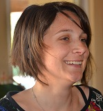
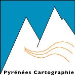

Conseils et expertises en aménagement et environnement
Nos territoires sont amenés à réfléchir à leur développement au travers d’un urbanisme plus
soucieux de l’environnement et de ses impacts sur nos espaces et nos modes de vie. L’approche
pluridisciplinaire de l’urbanisme est devenue notre démarche permanente, en confrontant les
enjeux démographiques, économiques, environnementaux, paysagers, agricoles, … De l’analyse à
la parcelle à un projet de territoire plus vaste, le bureau d’études T.A.D.D. accompagne les
collectivités dans la construction de leurs espaces de demain…
Nos compétences
 Documents de planification : Plan Local d’Urbanisme (PLU) communal ou
intercommunal (élaboration, révision, modification), carte communale, Schéma
de Cohérence Territorial (SCoT),…
Documents de planification : Plan Local d’Urbanisme (PLU) communal ou
intercommunal (élaboration, révision, modification), carte communale, Schéma
de Cohérence Territorial (SCoT),…
 Mise en place de moyens de concertation innovants :
affiches, réunions publics,
visites « guidées », ateliers de travail, outils « en ligne »,...
Mise en place de moyens de concertation innovants :
affiches, réunions publics,
visites « guidées », ateliers de travail, outils « en ligne »,...
 Prospective territoriale :
charte de territoire, Projet d’Aménagement et de
Développement Durable (PADD) communal ou intercommunal,i …
Prospective territoriale :
charte de territoire, Projet d’Aménagement et de
Développement Durable (PADD) communal ou intercommunal,i …
Diagnostic de territoire : état des lieux et mise en évidences des enjeux (thèmes
transversaux: urbain, agriculture, économie, tourisme, environnement, …
Etudes réglementaires : Amendement DUPONT, étude loi sur l’eau, étude
d’impact, règlement local de publicité
Accompagnement administratif : aide à la saisie des commissions (CDPENAF,
demande de dérogation - L142-5 du Code de l’Urbanisme), appui à la rédaction
de délibération, …
Votre expert

Amandine RAYMOND, Géographe-Urbaniste O.P.Q.U
Amandine RAYMOND dispose d’une double formation en environnement et en aménagement du territoire/ urbanisme particulièrement adaptée aux territoires ruraux et montagnards.
Forte d’une expérience professionnelle de plus de 10 ans, elle porte un regard avisé sur l’ensemble des processus d’évolution d’un territoire (d’un point de vue économique, social et environnemental) et devient alors un appui stratégique et pluridisciplinaire des collectivités territoriales et des porteurs de projets.
En étroite collaboration avec
www.agretpy.fr
Geneviève RIGOU
Urbaniste OPQU & Agronome
Urbaniste OPQU & Agronome
Laurent RIGOU
Pédologue
Pédologue

www.pyrcarto.com
Guillaume ARLANDES
Géomaticien
Géomaticien
En fonction des besoins, T.A.D.D. s’associe aussi avec :
-
{% for col in page.collaborateurs %}
- {{ col[0] }} ({{ col[1]}}) {% endfor %}
Nous contacter
Bureau d’études T.A.D.D.
Amandine RAYMOND
56 rue du Pic du Midi
65190 POUMAROUS
05 62 35 59 76
06 73 36 25 73